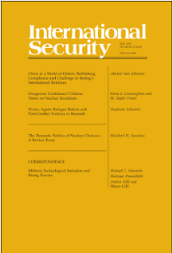
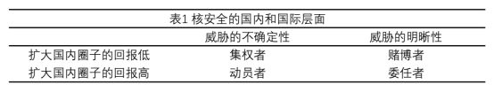
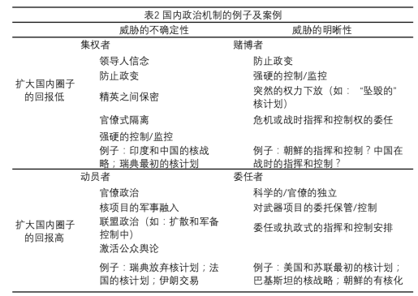

收录于合集

作品简介
【作者】 Elizabeth N. Saunders，乔治城大学外交学院副教授及该校安全研究项目核心教员。研究兴趣为国际关系的国内政治及美国的外交政策，尤其关注领导人的作用，总统(presidency)及使用武力的政治（the politics of using force）。
【 编译】 扎西旺姆（国政学人编译员，伦敦大学亚非学院）
【校对】 王川
【审核 】 陈勇
【排版】 杨洋
【 来源 】 Saunders, Elizabeth N. “The Domestic Politics of Nuclear Choices—A Review Essay.” International Security 44.2 (2019): 146-184.
期刊介绍

《国际安全》（ International Security ）于1976年创立，是国际和国家安全领域的顶级同行评议学术期刊，以季刊形式发行。由哈佛大学贝尔弗科学与国际事务中心（Belfer Center for Science and International Affairs at Harvard University）编辑，麻省理工学院出版社（MIT Press）组织出版。根据2018 Journal Citation Reports显示，其影响因子为4.500，位列“国际关系”类别期刊第二位。
核政策选择的国内政治机制 ——评论文章
The Domestic Politics of Nuclear Choices—A Review Essay
Elizabeth N. Saunders
内容提要
国内政治将在何时 、以及如何影响一国的核政策选择？ 近年来，关注核安全的学术研究已经从国内政治方面对不同的核决策提出了很多解释。这些解释部分源于比较流行的两种研究趋势：一是学者们通过对核扩散前后国家行为的研究，拓展了研究核问题的时间线；二是学者们超越了以往对民主和专制的生硬区分，更加细致地理解国内因素对国际行为的限制。如果缺少国内限制因素与国际行为的某些联系，国内政治因素可能被视为只能在某些情况下发挥作用而不能解释重要变化的影响因素。 本文评估了最近对国内政治与核安全关系的研究，提出一个理解国内政治机制可能在何时、以及如何影响核政策选择的分析框架。 作者认为， 两个维度的因素决定着国内政治影响核政策选择的程度与实质：一是威胁的不确定性程度；二是领导人对扩大核决策的国内行为体圈子（domestic circle）的成本和收益权衡。本文所提出的分析框架有助于理解近期核安全研究文献中所探究的案例，也有助于理解国内政治观点何时以及如何背离基于安全的分析所做出的预测。
**
** 文章导读
一、介绍
了解国家核决策的来源不仅有助于学者更好地解释核决策，也有助于决策者制定应对核挑战的政策。尽管在过去十年间，关于核安全中国内政治因素的新研究大量出现，但是学界仍然缺乏学者们对国内政治何时以及如何发挥作用的解释。作者认为，核政策选择的两个维度影响着国内政治何时以及如何发挥作用：一是威胁的不确定性程度，它为国内各方因如何调整核政策以应对威胁而产生的分歧创造了空间；二是扩大国内的核决策圈子所付出的代价，也就是领导人将核决策的部分权力移交给其他国内行为体的成本效益权衡，这将影响到核决策圈子的最终规模。这两个维度决定了国内政治存在多大的空间:当威胁不确定性很高时，产生分歧的空间更大；然而，当领导人将为扩大核决策圈子的利益付出巨大代价时，他们就会有更强的动机来集中政策。
这篇评论文章分六部分展开。首先，作者回顾和评估了最近国内政治和核安全领域的学术进展。然后，作者考察了核政策选择的两个方面:威胁的不确定性和领导人为扩大国内参与核决策的圈子而付出的代价。第三，作者基于这两个维度构建了一个框架，阐明在最近文献中确定的国内政治机制何时可能发挥作用。第四和第五部分，作者举例说明这个框架如何适用于最近的学术研究中讨论的几个案例并探讨了这个框架对理解国内政治的观点何时以及如何偏离基于安全分析的预测的启示。最后，作者以对未来研究的启示结尾。
二、 国内政治与核安全研究的学术趋势 ****
国家核行为的国内解释和安全解释之间的争论并不新鲜。 以往关于国内政治和核 政策 选择的学术研究的一个显著特点是，国内政治约束是自下而上的 。 ****也就是说，最高决策层之外的国内政治参与者试图利用他们的权力来影响核政策选择。斯科特 ·萨根(Scott Sagan)指出，采用“自下而上的视角”的国内政治模式深受官僚政治和技术的社会构建论(social construction of technology)文献的影响。萨根进一步指出，官僚行为体并不被视为自上而下的政治决策的被动接受者。相反，他们通过鼓励对外国威胁的极端观点、提拔支持他们的政客以及积极游说国防开支增加，创造了有利于武器征用的条件。然而他认为，就核武器扩散而言，没有成熟的国内政治理论可以确定形成支持或反对核扩散的联盟的条件。
当 然也有研究 提 出自上而下的过程 (top-down processes)。 ****罗伯特 ·杰维斯(Robert Jervis)在他对核革命(nuclear revolution)的分析中强调了高层决策者的心理。妮娜·坦嫩瓦尔德(Nina Tannenwald)关于核禁忌(nuclear taboo)的论述，不仅强调了能产生自下而上的压力的草根阶层和公民社会行为体，也强调了接受核禁忌并将其制度化并纳入国家政策的精英阶层。但是，正如萨根所指出的， 在自由主义理论的传统中，国内政治 观点 的主要方向往往是自下而上的，从国内行为者的偏好出发。 ****
最近的研究加深了学者们对国内政治对核安全决定必要性和制约因素的认识。 有 两个进展扩展了学者们看待核政策选择的国内政治视角 : 一是 核时间线的扩展 ，二是 政权类型研究的变化。 ****这些进展 使国内政治更有可能以更明确具体的方式影响核安全。尽管这些观点在很大程度上仍处于孤立状态，但它们更倾向于以一种自上而下的视角来看待国内政治，即政府乃至民主国家及专制国家的领导人控制着核安全政治的参与权。
** 2.1新的核时间线
** 最近的核研究扩大了核扩散前后的核时间 线 。 ****学者们对一个国家
核扩散前的的核活动给予了更多的关注，比如对核潜力（nuclear
latency）的研究，即如果一个国家选择发展核武器，对该国从目前的技术发展状态达成其发展目标的速度的衡量。另一项研究探讨了各国在面临国际和国内挑战时如何将对核弹的渴望转化为核能力。关于这个问题的新研究集中在国内政治变量上。例如，海曼斯(Hymans)认为，一个国家实现核武器计划的能力取决于核机构的专业性，而核机构的专业性又取决于领导人是否不干涉专业人士。
最近的研究还揭示了各国在获得核弹后的核轨迹 (nuclear trajectory)，包括分析地区大国的核战略，对美国和苏联核力量结构和冷战时期核战略的新评估，各国反扩散选择的决定因素，以及党派关系在军备控制中的作用。这些因变量非常不同，但一些国内政治变量能够解释其中多个变量。将核因变量（nuclear dependent variables）作为一个整体进行研究可以发现，为解释这些问题而提出的许多国内政治观点都遵循了自上而下的方法。
**
2.2核安全的新国内政治** ****
在最近的核安全文献中可以看到， 学者们已经超越了 “专制 ( autocracy) 和 “民主” ( democracy) 的生硬区分。 ****主要体现在以下三点：第一，学者们对各政体类型下的国家如何追求安全进行了更细致的预测，尤其是针对以前被忽视以及过于笼统的专制政体类别。其次，学者们已经确定了 适用于不同政权类型的机制，比如国内政治经济的特征，或者对长期认可的概念的新理解，如军民关系（civil-military relations），尤其是平民在多大程度上限制了军队的权力，或者极端地参与了可能损害军事效力的防政变行动（coup- proofing）。第三，越来越多的研究结果揭示了领导者如何系统性地影响安全选择。一些学者关注领导人个人的信仰和背景，而另一些学者则探讨不同的国内机构如何通过为领导人提供不同的（政策选择）范围（的方式）来形塑安全方面的决定。
**
**
2.3两者结合，大于其总和
虽然对核政策选择的国内解释越来越多，但是除了围绕核扩散等单一因变量的持续辩论外，它们之间几乎没有什么联系。纵观不同的因变量， 最近许多 核安全文献 观点 的一个共同特征是，领导人对其他国内行为体是否能够参与或影响核 政策 选择 加以 控制。 ****人们通常认为，领导者会干预 (intervening)、超越(overriding)或绕过(circumventing)制度或官僚的约束，甚至从一开始就阻止这些约束的形成。然而，集权化的决策（centralized policymaking）并不是自动进行的，领导人可能不得不通过国内政治努力来获得并维持他们对决策的控制，从而改变核政策。因此， 国内政治的影响可能不会立即显现， 而是 可能 一直 影响 着 核 政策 选择 。
三、 国内政治何时重要？ ****
作者认为有两个变量有助于理解国内政治何时以及如何影响核政策选择:威胁的不确定程度会影响国内辩论和分歧的范围; 扩大国内核政策选择圈（the domestic circle for nuclear choices）的成本和收益。
3.1威胁的不确定程度
关于威胁的不确定性有几个来源。首先，对于任何给定的状态，安全环境的永久特性(如地理位置) 为不同的对威胁的看法的范围设置了一个重要的基线。其次， 国家掌握的关于威胁的性质、严重性、可能性以及来源的信息的不完整，导致了不确定性产生。 ****而 某些信息可能涉及对手的能力或意图，以及可能减轻威胁的因素，如盟友的支持。第三，国内行为体可能对威胁的性质和严重性持有不同的信念，因此，如果不同行为体通过不同的信念或动机性推理(motivated reasoning)来看待相同的信息，就会产生不确定的评估，这可以被描述为对威胁意义的不确定性。
核安全文献越来越认识到， 不同政权类型的领导人对威胁的评估各不相同。 **** 即使是在 同一国家内 ， 决策者之间也可能出现不同的信念和 对 威胁 的 评估 。然而，威胁的严重程度可能影响核问题在国内政治中的重要性，因此可能影响接下来的一个方面：扩大核政策选择圈的成本和收益。
3.2扩大核政策选择圈的成本和收益
如果领导人放松对核政策选择的控制(例如，扩大决策者的圈子或下放核政策的某些方面)，那么扩大国内圈子的成本和收益就会体现出来。作者指的“国内圈”（domestic
circle）是那些能够参与或观察领导人的核决策，并可能为该决策施加成本或为领导人提供利益的人。在 国内圈 中，
国内行为体的三个连续的层次是相关的 。首先，处于中心的是国家领导人和他们的核心圈子，他们是最终的决策者。下一层由精英人士组成，他们 的
参与 往往是改变核政策 或 实施改变的核政策 所必需的，他们的偏好可能会影响核 政策
**选择，但他们没有直接的决策权 (除非领导人明确授权)。**这个群体包括官僚、军事和司法界的精英，以及参与核项目的科学家和技术人员。
最后一层由大众组成，他们通常是核政策的观察者或 “观众”（ audience ），而不是参与者，但他们的偏好可以作为对领导人的约束
，也可 由精英人士的暗示所激活。
各国领导人在扩大国内核 政策 选择圈时可能产生 的成本 或获得 的 收益将 因 正在考虑的具体政策 的不同 而有所不同。 领导人对其他国内政治角色参与或影响核决策的谨慎态度有两个来源。第一，在一个特定的核问题上，国家内部可能存在政策偏好的分配。第二，独立于核政策之外，其他国内行为体可能有自己个人、政治或组织利益，对领导人构成国内威胁。在成本方面，当领导人考虑改变核政策时——无论是启动核武器计划，跨越扩散的门槛，改变核态势，还是寻求军备控制协议——如果有更多的行为体参与，他们可能要付出国内代价。如果领导人允许其他行为体或选民参与决策过程，他们可能会面临政治成本，包括政治资本或声望的丧失，甚至面临下台。领导人可能要付出的另一种形式的代价是失去对核政策的控制或影响——例如，如果他们让具有不同偏好的利益相关者(如军方、官僚机构或立法机构)有权制定政策，便有可能如此。 领导人可能愿意付出代价来 保持小的决策圈 ，排除或操控一些国内行为体以实现他们认为最合适的政策。 面对扩大核政策范围所付出的代价(以及保持小的决策圈所带来的利益)，各国领导人为什么要放松对核政策的控制呢?首先，领导人可能需要授权给其他国内行为体，以使其偏好的政策成为现实;第二，第二，扩大核政策圈可以帮助领导人使他们的核政策“持续”（stick）下去。第三，更广泛的支持基础可能带来国际利益，比如更可信地表明对某项政策的承诺。第四，扩大的圈子可以通过包括完善的科学或技术基础设施等来促进创新。 威胁的不确定性和扩张国内圈子的成本和收益这两个维度并不是完全独立的。除非领导人采取措施将不同偏好的行为体排除在外， 不确定的威胁会增加其试图影响核政策选择的可能性。任一方向上威胁不确定性的变化也可能影响核决策的重要性。
四、核政策选择的国内政治：一个框架

作者将威胁的不确定性和扩大国内圈的成本和收益这两个维度结合在一起，形成了一个有助于反映近期文献的框架。如表1所示，将这两个维度放在一起可以得到四种可能的组合。表中的行将扩大国内圈子的成本和收益合并为“回报”，回报可以是低的(例如，成本高而收益低)，也可以是高的(例如，低成本或收益高于成本)。 在左上 “ 集权 者 ”（ centralizer ）单元中，威胁的性质、严重程度或意义存在重大的不确定性，而且国内存在将某些行为体排除在核决策圈子之外的动机，这给领导人提供了强烈的动机来保持对核政策的严密控制。 在威胁仍然不确定但扩大国内圈子的回报更高的地方，如左下方的单元， “ 动员者（ mobilizer **） ”可能会看到扩大国内核政策圈子和确保其他国内行为体参与的巨大好处，即使他们在这样做时要付出代价。**需要注意的是，官僚机构和立法机构不仅仅是动员的领导人决定给予政治准入的被动参与者。
在表1的右侧是关于威胁的更清晰的情况。在面临威胁时，领导人可能别无选择，只能扩大国内行为体的圈子，以实现他们所认为的在核政策方面的有益改变，比如向科学家或技术团体授予权力，或向军方授予更大的核使用权力。这种扩张的程度可能存在重大限制，政策可能仍相对集中。毕竟，当威胁是确定的和严重的时候，集权化可以用来调动资源或指示优先次序。但是，即使围绕安全威胁的不确定性很小，不同的国内激励措施也可能导致不同的结果。在表1的右上方单元格中， 扩大国内圈子的成本相对于收益而言是高昂的，领导人只有在威胁变得如此严重以至于领导人别无选择时，才可能放松对核政策的控制。这样的领导人可以被称为 “ 赌博者 ” （ gambler ） ，因为他们实质上是在押注国内威胁高于国际威胁，因此他们很可能在最后的时候才不情愿地下放政策。“ 赌博者 ”不仅押注核政策的这种改变是不必要的，而且还押注他们可以在需要时相对迅速地执行一项改变，这是一种高风险的战略。
在扩大国内圈子的成本较低或收益较高的地方，如表1的右下角单元， “ 委任者”（ delegator ）可以更顺利地将权力移交给那些将实施其 决定 的人。可能已经设立了机构或基础设施来促进这种授权。 这个框架不可避免地进行了过度简化，并且仅标识理想类型。在现实世界中，每个维度都是一个连续体。例如， “ 赌博者 ” 和 “ 委任者 ” 之间的界限可能特别模糊。一些“冲刺”(sprinting)扩散战略可能跨越这一界限，面对明显的威胁，允许核机构（nuclear bureaucracy）在某种程度上进行专业运作，但要受到领导人或其代理人的指导性的监视。
五、机制和说明性案例
表2列出了在最近的研究中在上述框架内讨论的几个国内政治机制。该表绝不是详尽的，但它确实显示了该框架如何阐明何时不同的国内政治机制可能影响几个核因变量。在“集权者”单元中，领导者的信念和观念可能是最重要的。为了实现集权化，领导人可能会使用一些机制，比如将某些精英人士排除在核政策的圈子之外;防止政变;设计或塑造使核政策不受特定国内行为体影响的机构。

“动员者”可能会试图利用联盟政治的工具为自己的政策争取支持，比如发放补贴、开放立法甚至公开辩论;他们还可能寻求建立或改变核官僚机构。“赌博者”很可能会以一个极端的程度使用许多与集权者相同的工具，甚至在面临确定的威胁时也是如此。当他们最终分权时，他们将以有限，突然或不情愿的方式这样做。“委任者”更有可能给予官僚机构和军队独立和资源，无论就核能力的建设、指挥还是控制都是如此。动员者或委任者可以让官僚机构拥有独立的声音，从而导致更传统的官僚政治观点阻碍了领导人实施政策改变的能力。
六、总结
本文分析了瑞典的核计划从集权者到动员者的变化之路以及作为动员者典型的法国核计划和伊朗交易的案例，并以中美的核冲突以及各自的核战略讨论了“赌博者”和“委任者”的界定以及当代的核挑战。文章最终的结论是，最近的研究已大大推动了正在进行的辩论，即国内政治何时以及如何影响国家的核选择，并为未来的研究提出了几个途径。首先，学者们应该继续从政权类型是否“重要”的问题转向领导人如何在政权内部与不同政权之间管理其国内圈子。其次，在核安全文献中发现的许多国内政治机制——包括公众舆论、官僚政治和军民关系——都可能受领导人扩大核政治圈子的决定的支配。第三，虽然这超出了这篇综述文章的范围，但未来研究的一个富有成果的途径是探索哪些国内政治机制更有可能影响不同的核因变量。最后，尽管方法论辩论超出了本文的讨论范围，但值得注意的是，定性证据在该文献中仍起着至关重要的作用。
_ ** _ ** _ ** _ 本文由国政学人独家编译推荐**__
扫下方二维码查看往期精彩
【新刊速递】第01期 | Review of International Studies Vol.45, No.4, 2019
【新刊速递】第02期 | International Relations Vol.33, No.3, 2019
【新刊速递】第03期 | International Organization Vol.73, No.3, 2019
【新刊速递】第04期 | World Politics, Vol.71, No.4, 2019
【新刊速递】第05期 | European Journal of International Relations
【新刊速递】第06期 | Security Studies, Vol.28, No.4, 2019
【新刊速递】第07期|International Secur.ity, Vol 44, No. 2, 2019
【新刊速递】第08期| Cambridge Review of International Affairs,Vol.32,No.4
【新刊速递】第09期| International Relations of Asia-Pacific Vol.19,No.3
【新刊速递】第10期 | International Studies Review, Volume.21, No.3, 2019
分类导览 1
分类导览 2

点“在看”给我一朵小黄花